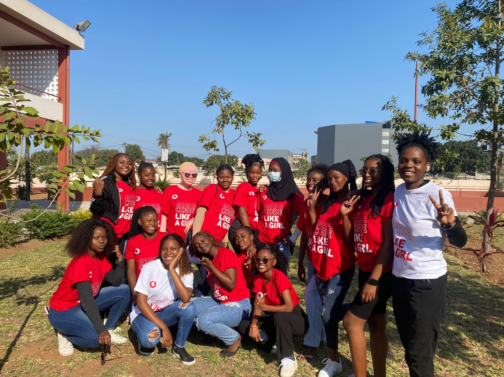

Cerca de 300 raparigas foram formadas em programação básica através do Programa Code Like a Girl promovido pela Vodacom Moçambique.
Para o presente programa de formação, foram seleccionadas cerca de 40 raparigas em cada escola, tendo iniciado o programa sem saberem utilizar um computador, contudo, após uma formação intensiva, puderam criar um website básica utilizando HTML, CSS e JavaScript. No total, foram formadas 337 raparigas no sul e centro do país.
Para o sucesso desta iniciativa, a Vodacom Moçambique, contou com o envolvimento de algumas comunidades entendidas na matéria como são os casos da MozDevz, Maputo Frontenders e WansaTI Lab, que mobilizaram mais de vinte voluntários que foram a todas as escolas onde o projecto foi realizado.
No entanto, o Programa Code Like a Girl já formou mais de 717 raparigas a nível nacional. Este programa, destina-se a raparigas entre os 14 e os 18 anos e visa desenvolver um conjunto de competências em programação, bem como expô-las a carreiras em Ciência, Tecnologia, Engenharia, e Matemática.
A telecomunicadora lançou o projecto Coke Like a Girl – Codifica como uma rapariga – com o objectivo de levar tecnologia a mais raparigas. A iniciativa destina-se a raparigas com idades entre os 14 e os 18 anos e procura aumentar o seu conjunto de habilidades através da programação, bem como expô-las a carreiras nas áreas de Ciência, Tecnologia, Engenharia e Matemática (STEM).
Inicialmente, o projecto impactou 20 raparigas e agora a acção pretende alcançar 300 potenciais futuras programadoras. O workshop, que será gratuito, terá a duração de uma semana e decorrerá entre os dias 10 e 18 de Março de 2022 em dois turnos (8:00h – 11:00h e 14:00h – 17:00h).
Para eleger as candidatas, a Vodacom Moçambique irá considerar como
créditos as seguintes premissas: o sexo e a idade; ter acesso a um
laptop ou desktop; acesso a uma conexão de internet segura; manifestação
de interesse em aprender programação.
Para se candidatar ao Coke Like a Girl, cada candidata terá que Clicar
no Link para preencher o formulário de inscrição:
https://lnkd.in/e4JHzC4c e Aguarda o contacto da equipa do workshop Code
Like A Girl!
“Quebrar barreiras e desafiar estereotipos de género e o que nos, mulheres fazemos de melhor. Na tecnologia e na engenharia e em outros campos, temos a oportunidade de moldar o futuro, criar solucoes inovadoras e deixar nossa marca em um mundo em constante evolucao. Juntas, estamos construindo um caminho de igualidade e excelencia, transformando desafios em oportunidades e inspirando geracoes futuras a trilharem o mesmo percurso. O mundo da tecnologia e engenharia espera por você, e juntas podemos conquistar grandes feitos.”